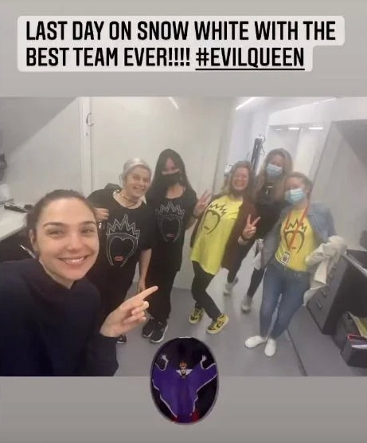

新浪娱乐讯 北京时间4月25日消息，据外国媒体报道，“神奇女侠”盖尔·加朵在社交媒体发文透露：她在《白雪公主》真人电影的戏份杀青。该片整体是否已杀青，则尚未确定。
此次加朵饰演邪恶皇后，她也感谢了该片团队的努力，照片中不少剧组成员穿着邪恶皇后的T恤。
这部迪士尼的《白雪公主》真人电影有瑞秋·泽格勒（《西区故事》）饰演白雪公主，安德鲁·伯纳普饰演男主角（《继承》），是一个新创造的人物，目前角色信息未知。马克·韦布（《超凡蜘/蛛侠》《和莎莫的500天》）执导，《爱乐之城》《马戏之王》词曲作者Benj Pasek和Justin Paul将为其创作新歌，预计将于明年上映。故事改编自1937年经典动画、迪士尼第一部动画长片《白雪公主与七个小矮人》，皇后因嫉妒公主的美貌使用诡计骗她吃下毒苹果。